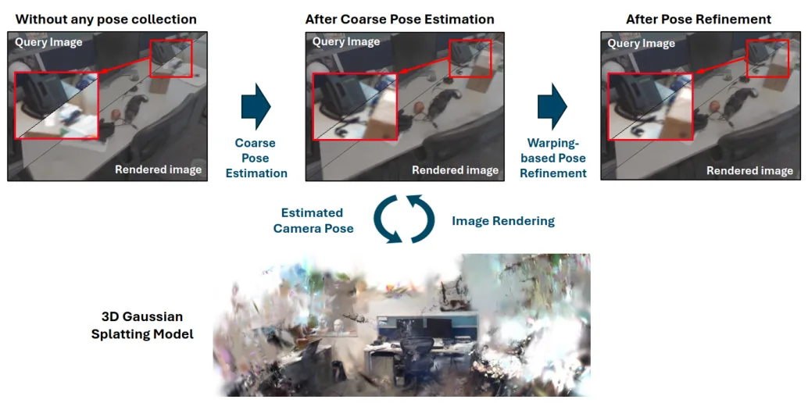
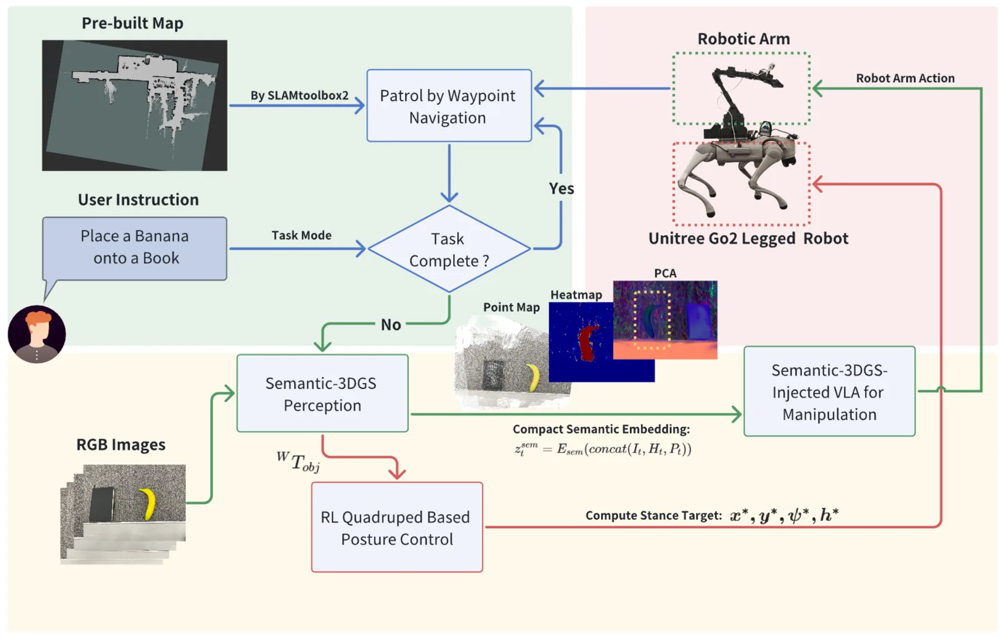
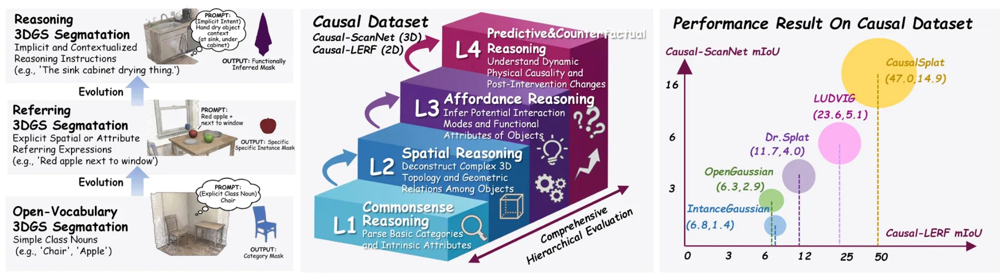
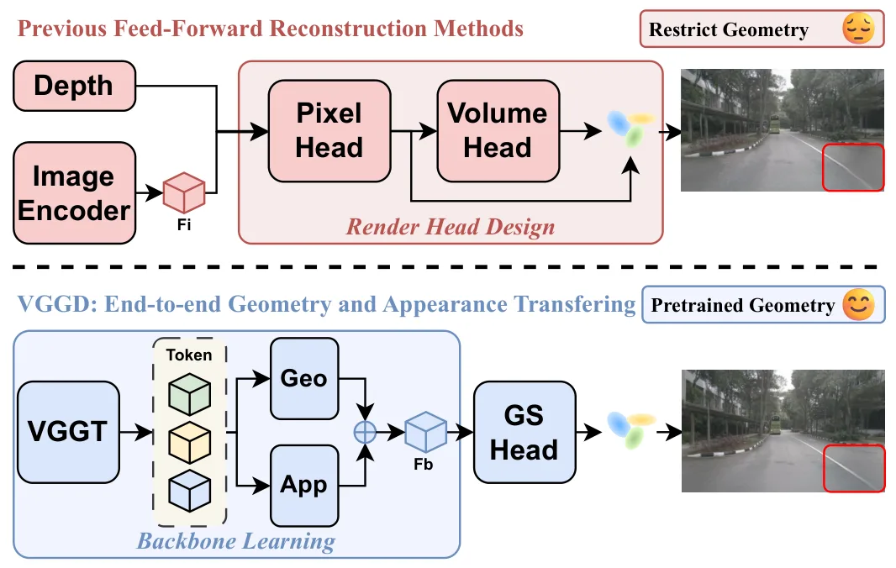
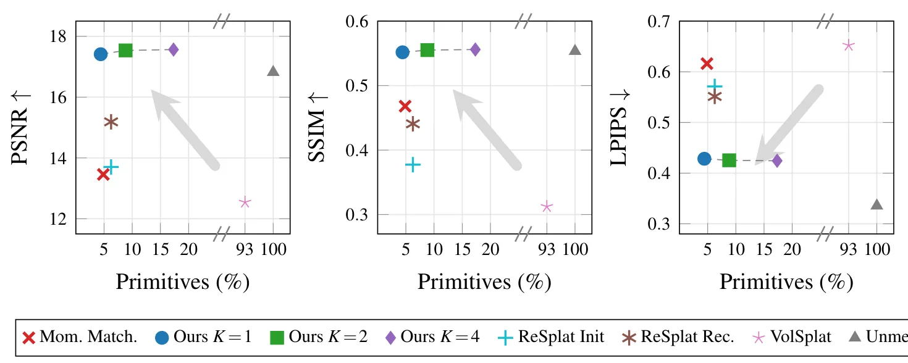
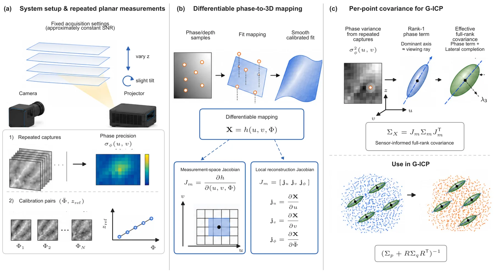

新论文 · 日期 2026-08-11 · score 15 · cs.CV
作者：Huaiyuan Weng, Chul Min Yeum, Su-Min Kang
评分 9.2/10
相机重定位六自由度位姿3D Gaussian Splatting几何定位可微渲染位姿细化
一句话工作总结：先以检索引导几何匹配获得可靠粗位姿，再通过 3DGS 可微渲染的可见性遮罩光度目标做多尺度细化。
GS-CPE 是一个由粗到细的六自由度相机位姿估计框架，将几何粗定位与基于 3D Gaussian Splatting warping 的位姿细化统一起来。系统先在 3DGS 场景表示上进行检索引导的几何位姿估计，再通过可见性感知的 masked RGB warping objective、多尺度优化和自适应重渲染细化结果。作者在 7Scenes、Cambridge Landmarks、FAST-LIVO2 与自建…
Despite substantial progress in visual localization, from scene coordinate regression to direct camera pose regression, achieving both robust generalization and high accuracy remain challenging. This study int…

新论文 · 日期 2026-08-11 · score 13 · cs.RO, cs.CV
作者：Huosen Ou, Dongni Song, Yuncong Wang, Tao Zhou
评分 7.7/10
Semantic-3DGS移动操作开放词汇三维语义定位视觉语言动作真实机器人
一句话工作总结：把可主动刷新 Semantic-3DGS 作为移动操作的共享三维语义接口，提高遮挡、杂乱与视角变化下的 grounding。
该框架将主动多视图 Semantic-3DGS、可达性感知底盘站位和 diffusion-based vision-language-action policy 结合起来。任务驱动的局部 Semantic-3DGS 在主动感知、语言条件三维定位、障碍推理、底盘准备和动作模型语义条件之间充当共享接口，并仅在后部 action-expert blocks 注入三维语义以保留预训练动作先验。摘要报告 50 次真实机器人实…
Embodied mobile manipulation requires language, visual observations, three-dimensional scene structure, and action feasibility to be aligned before execution. We study open-vocabulary target grounding with few…

新论文 · 日期 2026-08-12 · score 10 · cs.CV
作者：Jiayu Ding, Meilu Song, Yun Chen, Wei Gao
评分 7.9/10
语义3DGS三维场景图开放词汇空间推理因果推理具身智能
一句话工作总结：用 3D scene graph 承载显式空间结构、VLM 处理隐式逻辑，扩展 3DGS 语义地图的层次推理能力。
CausalSplat 将开放词汇 3DGS 场景理解扩展到隐式意图、复杂空间约束与 commonsense reasoning。作者提出 reasoning 3D Gaussian segmentation 任务，并构建 Causal-LERF 与 Causal-ScanNet，覆盖常识、空间、affordance 和 counterfactual reasoning。框架使用 3D scene graph 与…
While 3D Gaussian Splatting (3DGS) has advanced open vocabulary scene understanding, existing methods remain confined to explicit queries. They struggle to interpret implicit intents, complex spatial constrain…

新论文 · 日期 2026-08-11 · score 10 · cs.CV
作者：Junhong Lin, Jinlong Wang, Xianda Guo, Yanlun Peng
评分 8.2/10
环视重建自动驾驶VGGT3D Gaussian Splatting稀疏视图几何先验
一句话工作总结：将 VGGT 几何先验前移到环视特征端，以双路径表示和尺度预热稳定稀疏单帧 3DGS 重建。
VGGD 面向相机重叠极少的单帧 surround-view driving reconstruction，利用 VGGT 提供可迁移的多视图几何先验 token。Dual-Path Neck 将 geometry-consistent 与 appearance-aware 表示解耦，以改善弱观测区域的外观补全；Scale Warmup 稳定早期几何学习并抑制 ego-pose 变化下的尺度漂移；hybrid pi…
Single-frame surround-view reconstruction faces severe geometric instability and rendering artifacts due to minimal inter-camera overlap. While existing methods rely on complex decoders or auxiliary cues, they…

新论文 · 日期 2026-08-11 · score 8 · cs.CV
作者：Tim-Felix Fassch, Jochen Kall, Cyrill Stachniss
评分 8.6/10
3D Gaussian Splatting表示压缩基元合并显著性前馈重建层次细节
一句话工作总结：用显著性自适应聚类和跨视图 latent 合并，将前馈式逐像素 3DGS 压缩到约 1/20 基元。
该工作针对 feed-forward 3DGS 常按像素生成 Gaussian、表示高度冗余的问题，提出结构感知的后处理合并流水线。方法先用显著图引导自适应 superpixel segmentation，把空间连贯且外观相似的 Gaussians 聚类；再通过 learned encoder 压缩每个 cluster，依据几何重叠和特征相似性跨视图匹配合并，最后由 level-of-detail decoder…
3D scene reconstruction, modeling, and rendering are highly relevant for numerous tasks, and 3D Gaussian splatting has become a standard choice in this context. Its feed-forward variants provide fast reconstru…

新论文 · 日期 2026-08-11 · score 4 · cs.CV
作者：Sehoon Tak, Jae-Sang Hyun
评分 8.4/10
点云协方差结构光不确定度传播G-ICP点云配准三维成像
一句话工作总结：从结构光相位噪声和标定映射推导各向异性逐点协方差，为 G-ICP 提供物理来源明确的不确定度。
论文从 fringe projection profilometry 的实际测量过程出发，依据实验相位精度、相位到深度及相位到三维的标定映射，构造逐点 3×3 covariance field。方法将 phase noise 传播为 rank-1 covariance，并加入拟合的横向图像空间扰动尺度形成有效 full-rank completion。重复平面实验显示主协方差方向与 viewing ray 接近，主…
Per-point uncertainty models are important in structured-light 3D reconstruction for probabilistic registration, fusion, and quality assessment. In practice, however, point-cloud covariances are often modeled…